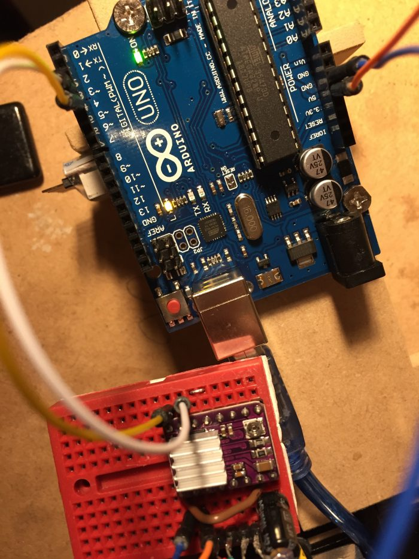
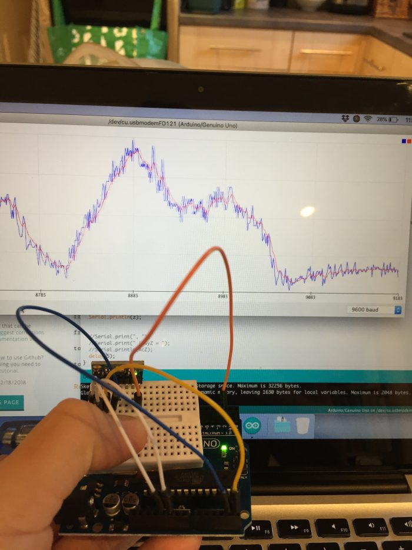
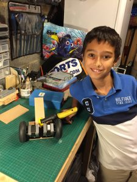
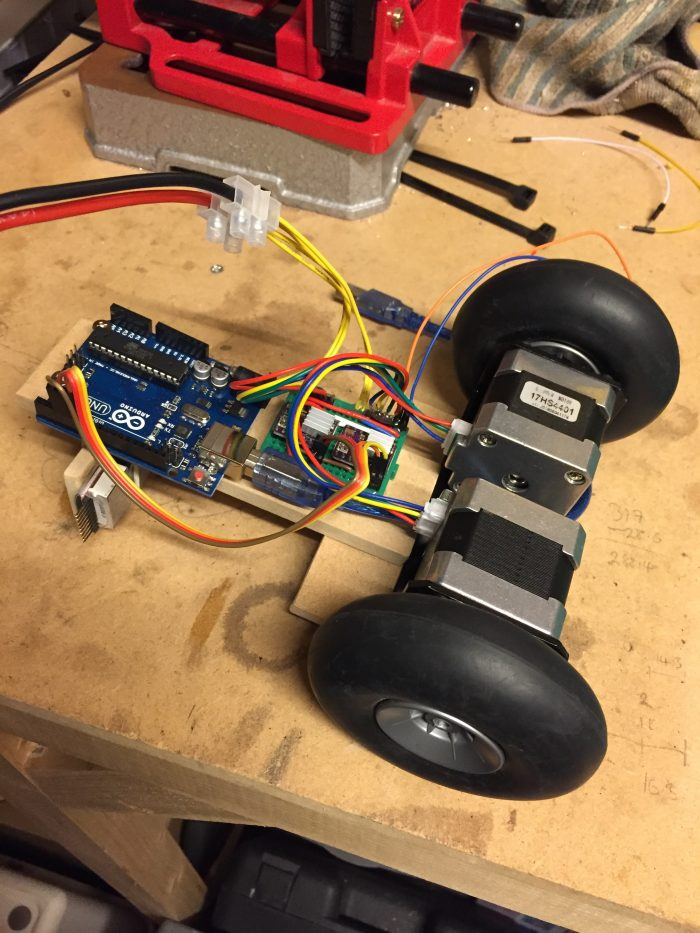

So I decided to practise some of my recently-acquired Arduino skillz to try and make a self-balancing robot.
The idea of a robot managing to monitor and update itself so fast it can actually balance really intrigues me. I wanted to see whether I could do it (without too much help from the Internet), and how well it would balance. I had some spare MDF lying around, so got to work…
The Build




Lessons Learned
- Driving stepper motors fast enough is tricky.
You have to send a signal to each motor every time you want it to ‘step’.
Without micro-stepping the robot shakes itself apart, but with micro stepping you have to send even more signals to the motors. - Reading gryo data directly from the MPU requires you to smooth out the data.
Too much smoothing, and you add a delay. Not enough and the robot gets ‘twitchy’.
Finding the middle ground is hard.
(If I was to do this again I would try using the interrupt pin on the gyro so it tells me when data is available, instead of having to repeatedly poll it.) - I like the Arduino Nano.
It’s just like the Arduino Uno, but much smaller. - Tuning the robot would be significantly faster if done over Bluetooth, instead of by changing the code and re-uploading using the USB cable.
What’s Next?
I would like to make it remote-controlled, which would add a whole new dimension of fun. I’m not sure that I will be able to do it though, given the code has to run fast enough to balance it and keep the stepper motors working.
If I ever come back to this I will probably have a go at creating another robot using brushed motors instead. The disadvantage is that they have less torque, but are easier to drive.